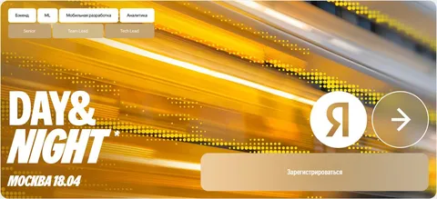

Имею честь пригласить вас на конференцию, в программный комитет которой я вхожу - 18 апреля состоится Day&Night* Городских сервисов Яндекса - флагманская конференция нашей бизнес-группы для senior-разработчиков/аналитиков и технических руководителей.
Будет пара крутых докладов, много клубов по интересам - на них можно познакомиться с нашими ребятами и коллегами по рынку, обсудить накопившиеся вопросы или послушать небольшие выступления. Клубы есть на любой вкус: от AI, мобилки и инфраструктуры до любителей винила и музыки. И, конечно, море нетворка и неформального общения.
Про что именно расскажем - пока секрет. Не то, чтобы мы в программном комитете сами еще не решили, но, должен признать, еще никогда составить сетку рассказов не было так трудно - рассказать хочется обо всем, но нужно выбрать самое-самое и не перегрузить аудиторию. Приходите, будет круто!
* - День и ночь
